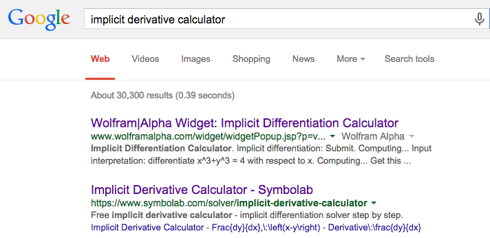
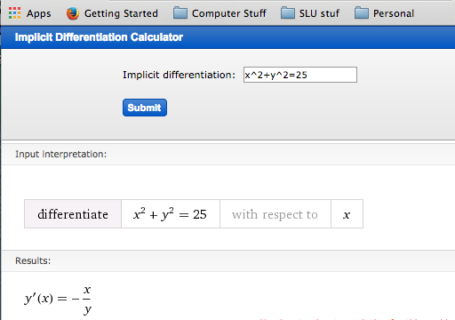
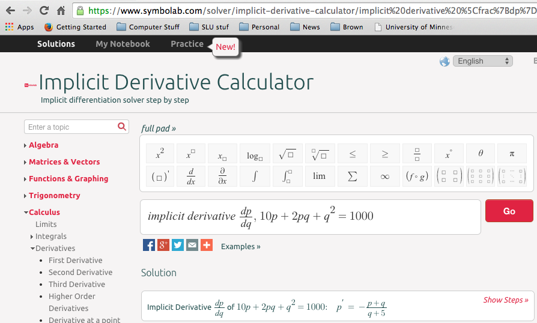

Section 5.1 Implicit Differentiation
We often run into situations where \(y\) is expressed not as a function of \(x\text{,}\) but as being in a relation with \(x\text{.}\) A familiar example is the equation for a circle of radius 5,
\begin{equation*}
x^2+y^2=25\text{.}
\end{equation*}
We recall that a circle is not actually the graph of a function. It is, however, the combined graph of the two functions representing the top and bottom halves of the circle.
We have two approaches if we want to find the slope of the line tangent to the circle at \((4,3)\text{.}\) We could first use algebra to express \(y\) as a function of \(x\text{,}\) and then use our rules to find the derivative. That approach works in this problem but will fail with more complicated relations. The alternative method is to say that \(y\) is implicitly a function of \(x\text{.}\) We can then use the chain rule to take the derivative of the relation, with the derivative of \(y\) being designated as \(y'\text{.}\) We can then solve for \(y'\) in terms of \(x\) and \(y\text{.}\) This second method is called implicit differentiation.
We start by trying both approaches on the equation of a circle.
Example 5.1.1. Tangent to a circle.
Find the equation of the line tangent to \(x^2+y^2=25\) at \((4,3)\text{.}\)
Solution 1. Solution A
To find the equation of a line we need a point and a slope. We already have the point at \((4,3)\text{.}\) To find the slope, we can express the circle as the graph of 2 functions. We first solve for \(y^2\text{:}\)
\begin{equation*}
y^2=25-x^2\text{.}
\end{equation*}
We then take the square root to produce 2 functions.
\begin{align*}
f_1 (x)\amp =\sqrt{25-x^2 }\\
f_2 (x)\amp =-\sqrt{25-x^2 }\text{.}
\end{align*}
The point is on the first function, which is the top half of the circle, so we take its derivative and evaluate at \(x=4\text{.}\)
\begin{align*}
f_1' (x)\amp =1/2 (25-x^2 )^{-1/2} (-2x)\\
f_1' (4)\amp =1/2 (25-4^2 )^{-1/2} (-8)=-4/3\text{.}
\end{align*}
Thus the tangent line, in point-slope form, is:
\begin{equation*}
y=3-\frac{4}{3} (x-4)\text{.}
\end{equation*}
Solution 2. Solution B
To find the equation of a line we need a point and a slope. We already have the point at \((4,3)\text{.}\) To find the slope, we take the derivative of our equation. Since we do not have y as a function of \(x\text{,}\) we simply note that its derivative is the placeholder \(y'\text{.}\) Recall that \(\frac{d}{dx} x\text{,}\) the derivative of \(x\) with respect to \(x\text{,}\) is simply 1.
\begin{align*}
\frac{d}{dx}(x^2+y^2\amp =25)\\
\frac{d}{dx}(x^2)+\frac{d}{dx}(y^2)\amp =\frac{d}{dx}(25)\\
2x \frac{d}{dx}(x)+2y \frac{d}{dx}(y)\amp =0\\
2x+2y y'\amp =0\text{.}
\end{align*}
We then solve for \(y'\) and substitute our point \((4,3)\) in for \((x,y)\text{.}\)
\begin{equation*}
y'=-\frac{2x}{2y}=-\frac{x}{y}\text{.}
\end{equation*}
When we substitute our point \((4,3)\) in for \((x,y)\) we get the same value, \(y'=-\frac{4}{3}\text{.}\) Thus the tangent line, in point-slope form, is:
\begin{equation*}
y=3-\frac{4}{3} (x-4)\text{.}
\end{equation*}
For the equation of a circle, either method works. We may encounter relations where solving for an explicit function is hard or impossible.
Example 5.1.2. Differentiation of a price-quantity relationship.
The quantity \(q\) and demand price \(p\) for widgets satisfy the relation
\begin{equation*}
10p+2pq+q^2=1000\text{,}
\end{equation*}
with \(10\lt q\lt 90\text{,}\) where quantity is in thousands of units. If I am currently selling 20,000 widgets, what is the relationship between change in quantity and change in price?
Solution.
Instead of solving for quantity as an explicit function of price, we will implicitly differentiate.
\begin{align*}
\frac{d}{d q}(10p+2pq+q^2 \amp =1000)\\
10 \frac{d p}{d q}+2*\frac{d p}{d q}*q+2p+2q\amp =0\\
\frac{d p}{d q} (10+2q)\amp =-2*(p+q)\\
\frac{d\ p}{d\ q}\amp =\frac{-2*(p+q)}{(10+2q) }\text{.}
\end{align*}
Since quantity is in thousands of units, if we are selling 20,000 widgets, \(\quantity:q=20\) and \(\price:p=12.00\text{.}\) Substituting those values into the formula for the derivative of price with respect to quantity, we see
\begin{equation*}
\frac{d\price}{d\quantity}=\frac{-2(12.00 +20)}{(10+2*20) }=-1.28\text{.}
\end{equation*}
We increase sales by 1000 by dropping price by $1.28.
For the first two examples, the relation was quadratic, so it was straightforward to find the derivative by either solving for an explicit function or by differentiating implicitly. However, if the relation more complicated we will find implicit differentiation easier than solving for the function.
Example 5.1.3. Another price-quantity relationship.
The quantity \(q\) and demand price \(p\) for gizmos satisfy the relation
\begin{equation*}
5p+3*(pq)^{1.5}+2q=2000\text{,}
\end{equation*}
with \(10\lt q\lt 100\text{,}\) where quantity is in thousands of units. If I am currently selling 25,000 widgets, what is the relationship between change in quantity and change in price?
Solution.
There is no easy method to solve this relation for either price or quantity as an explicit function of the other. Instead, we will implicitly differentiate.
\begin{align*}
\frac{d\ }{d\ q}\amp(5*p+3*(p*q)^{1.5+}2*q =2000)\\
5 \frac{d\ p}{d\ q}\amp+3*(1.5*p^{.5}*\frac{d p}{d q}*q^{1.5}+p^{1.5}*1.5*q^{.5} )+2 =0\\
\frac{d\ p}{d\ q}\amp*(5+4.5*p^{.5}*q^{1.5} ) =-(2+4.5*p^{1.5}*q^{.5})\\
\frac{d\ p}{d\ q}\amp =-\frac{(2+4.5*p^{1.5}*q^{.5})}{(5+4.5*p^{.5}*q^{1.5} ) }\text{.}
\end{align*}
Since quantity is in thousands of units, if we are selling 25,000 widgets, \(\quantity=25\) and \(\price=2.986\text{.}\) Substituting those values into the formula for the derivative of price with respect to quantity, we see
\begin{equation*}
\frac{d\ price}{d\ quantity}=\frac{-118.104}{997.025}=-0.12088\text{.}
\end{equation*}
We increase sales by 1000 by dropping price by $0.121.
A standard result from economics is the Cobb-Douglas equation that claims
\begin{equation*}
Y=AL^\alpha K^\beta\text{,}
\end{equation*}
where \(Y\text{,}\) \(L\text{,}\) and \(K\) represent total production, labor, and capital, respectively. In the classical model \(\alpha+\beta=1\text{.}\)
This can be understood as a relation involving capital and labor. An interesting question is to ask for the rate of change of capital with respect to labor, or how increasing or reducing capital investment will raise or lower labor costs.
Example 5.1.4. Differentiation of Cobb-Douglas.
A widget manufacturer has a production function given by
\begin{equation*}
Y=50L^{0.75} K^{0.25}\text{.}
\end{equation*}
The manufacturer currently uses 81 units of labor and 16 units of capital. Find the derivative of labor with respect to capital and interpret your result.
Solution.
We implicitly differentiate our equation with respect to capital.
\begin{align*}
\frac{d }{d K}\amp (Y =50L^{.75} K^{.25})\\
0\amp =50*(0.75*L^{-0.25}*\frac{d L}{d K}*K^{.25}+L^{.75}*.25*K^{-0.75} )\\
\frac{d L}{d K}\amp*(0.75*L^{-0.25}*K^{.25} ) =-(L^{.75}*.25*K^{-0.75})\\
\frac{d L}{d K}*\amp =-(L^{.75}*.25*K^{-0.75})/((0.75*L^{-0.25}*K^{.25} ) )=-L/3K\text{.}
\end{align*}
Substituting in our values for \(L\) and K we see that \(Y=50*81^{.75} 16^{.25}=2700\) and \((d L)/(d K)=-81/48\approx-1.6875\text{.}\) This means, if we want to keep level production, changing capital investment by 1 unit allows us to change labor by \(-1.6875\) units.
Implicit differentiation using CAS.
As with regular differentiation, we can use online computer algebra systems to do implicit differentiation. The easiest way to do this is with a web search for implicit differentiation calculator.

The first option we are given is a widget interface for WolframAlpha. It easily lets us do the first example in this section.

The second option from the search takes us to a calculator from Symbolab. It will easily do the second example from this section.

You should notice that the Symbolab calculator lets you use other variables and has an easy option for showing step by step solutions.
Summary.
Implicit differentiation is an application of the chain rule. To use this technique we need an equation between two variables that we can think of as implicitly defining one variable as a function of the other. If assume one variable is implicitly a function of the other, differentiating the equation gives us an equation in the two variables and the derivative. We can then use algebra to solve the new equation for the derivative.
Reading Questions Reading Check
1. Reading check, Implicit Differentiation.
Exercises Exercises: Implicit Differentiation Problems
Exercise Group.
For the following equations find the specified derivative.
1.
\(2x+3y=23\text{.}\) Find \(\frac{dy}{dx}\text{.}\)
Solution.
The best method is to notice this is a line with slope \(\frac{-2}{3}\text{.}\) Plunging ahead without noticing that:
\begin{align*}
\frac{d}{dx} (2x+3y )\amp = \frac{d}{dx} 23\\
\text{Implies that }2+ 3\frac{dy}{dx}\amp =0\text{.}
\end{align*}
Solve for \(\frac{dy}{dx}\text{:}\)
\begin{equation*}
\frac{dy}{dx} =\frac{-2}{3}\text{.}
\end{equation*}
2.
\(7x+9y=23\text{.}\) Find \(\frac{dy}{dx}\text{.}\) (You can use two different methods.)
3.
\(x^2+3xy+5y^2=23\text{.}\) Find \(\frac{dy}{dx}\text{.}\)
Solution.
\begin{align*}
\frac{d}{dx} (x^2+3xy+5y^2 )\amp = \frac{d}{dx} 23\\
\text{Implies that }2x+3 \frac{d}{dx} (xy)+5 \frac{d}{dx} y^2\amp =0\text{.}
\end{align*}
For the \(\frac{d}{dx} (xy)\) term we need to use the product rule and for \(\frac{d}{dx} y^2\) we need the chain rule. We then get
\begin{equation*}
2x+3[(1)y+x\frac{dy}{dx}]+5 (2y)\frac{dy}{dx} =0\text{.}
\end{equation*}
Solve for \(\frac{dy}{dx}\text{:}\)
\begin{align*}
2x+3y+3x \frac{dy}{dx}+10y \frac{dy}{dx} \amp =0\\
\text{Hence }(3x+10y) \frac{dy}{dx} \amp =-(2x+3y)\\
\text{And }\frac{dy}{dx} \amp =-((2x+3y))/((3x+10y) )\text{.}
\end{align*}
4.
\((x^3+x^2+1)(y^3+2y+3)=5\text{.}\) Find \(\frac{dy}{dx}\text{.}\)
5.
\(75*\price+(\quantity^2)/100=2000\text{.}\) Find \(\left(\frac{d\price}{d\quantity}\right)\text{.}\)
Solution.
Some may find this easier with shorter variable labels: \(75P+Q^2/100=2000\text{.}\) Find \(\frac{dP}{dQ}\text{.}\)
\begin{align*}
\frac{d}{dQ} [75P+\frac{Q^2}{100}]\amp =\frac{d}{dQ} 2000\\
75 \frac{dP}{dQ}+\frac{Q}{50}\amp =0\text{.}
\end{align*}
Hence \(\frac{dP}{dQ}=- \frac{Q}{50*75}= \frac{-Q}{3750}\text{.}\)
So we have that \(\frac{d\price}{d\quantity}/= \frac{-\quantity}{3750}\text{.}\)
So if we were to increase the quantity by 1 (\(d\quantity = 1\)), then there would be a decrease in price (\(= d\price\)) equal to the quantity divided by 3750. So a small increase in quantity would result in a (small) decrease in price.
6.
\(50*\price+5*\price*\quantity+(\quantity^2)/10=5000\text{.}\) Find \(\frac{d\price}{d\quantity}\text{.}\)
7.
\(40*\price+7*\price*\quantity+\sqrt{\quantity}=2000\text{.}\) Find \(\frac{d\price}{d\quantity}\text{.}\)
Solution.
Rewrite as: \(40p+7pq+\sqrt{q}=2000\text{.}\) Find \(\frac{d\ p}{d\ q}\text{.}\)
We take the derivative with respect to q of both sides. In other words we apply \(\frac{d}{d\ q}\) to both sides.
\begin{align*}
\frac{d}{d\ q} [40p+7pq+q^{0.5} ]\amp =\frac{d}{d\ q} 2000\\
40 \frac{d\ p}{d\ q}+7[\frac{dp}{dq} q+p]+0.5 q^{-0.5}\amp =0\\
(40+7q)\frac{d\ p}{d\ q}+7p+0.5 q^{-0.5}\amp =0\\
\frac{d\ p}{d\ q}\amp = \frac{-7p-0.5 q^{-0.5}}{40+7q}\text{.}
\end{align*}
8.
\(50*\price^2+5*\price*\quantity=3000\text{.}\) Find \(\frac{d\price}{d\quantity}\text{.}\)
9.
\(1000=5L^{0.6} K^{0.4}\text{.}\) Find \(\frac{dK}{dL}\text{.}\)
Solution.
Take the derivative with respect to \(L\) to both sides:
\begin{align*}
\frac{d}{dL} 1000\amp =5 \frac{d}{dL} [L^{0.6} K^{0.4} ]\\
0\amp =5[\frac{d}{dL}(L)^{0.6})K^{0.4}+L^{0.6} \frac{d}{dL}(K^{0.4})] \qquad \text{(product rule)}\\
0\amp =5[0.6 L^{-0.4} K^{0.4}+L^{0.6} 0.4K^{-0.6} \frac{dK}{dL}] \text{.}
\end{align*}
Divide both sides by 5 and solve for \(\frac{dK}{dL}\text{.}\)
\begin{equation*}
\frac{dK}{dL}=- \frac{0.6 L^{-0.4} K^{0.4}}{L^{0.6} 0.4K^{-0.6}}=\frac{-3K}{2L}\text{.}
\end{equation*}
10.
\(2000=7L^{0.3} K^{0.7}\text{.}\) Find \(\frac{dK}{dL}\text{.}\)
11.
\(3000=2L^{0.25} K^{0.75}\text{.}\) Find \(\frac{dL}{dK}\text{.}\)
Solution.
\begin{align*}
\frac{d}{dK} 3000\amp =2 \frac{d}{dK} [L^{0.25} K^{0.75} ]\\
0\amp =2[\frac{d}{dK}( L^{0.25}) K^{0.75}+L^{0.25} \frac{d}{dK}( K^{0.75} )] \qquad\text{(product rule)}\\
0\amp =2[0.25L^{-0.75}\frac{dL}{dK} K^{0.75}+L^{0.25} 0.75K^{-0.25} ] \\
\frac{dL}{dK}\amp =-\frac{L^{0.25} 0.75K^{-0.25}}{0.25L^{-0.75} K^{0.75}}\\
\amp =-3 \frac{L}{K}\text{.}
\end{align*}
12.
\(7000=11L^{0.8} K^{0.2}\text{.}\) Find \(\frac{dL}{dK}\text{.}\)
13.
The production function for a widget factory is \(1000=15L^{0.7} K^{0.3}\text{.}\) Find \(\frac{dK}{dL}\) and \(\frac{dL}{dK}\text{.}\) Interpret what they mean.
Solution.
Part 1: Find \(\frac{dK}{dL}\text{.}\)
\begin{align*}
\frac{d}{dL} 1000\amp =15\frac{d}{dL}[L^{0.7} K^{0.3}]\\
0\amp =15[\frac{d}{dL} (L^{0.7} )K^{0.3}+L^{0.7} \frac{d}{dL} (K^{0.3})]\\
0\amp =[0.7 L^{-0.3} K^{0.3}+L^{0.7} 0.3K^{-0.7} \frac{dK}{dL}]\\
\frac{dK}{dL}L\amp =\frac{-0.7 L^{-0.3} K^{0.3}}{L^{0.7} 0.3K^{-0.7}} = -\frac{7K}{3L}\text{.}
\end{align*}
Part 2: Find \(\frac{dL}{dK}\text{.}\)
\begin{align*}
\frac{d}{dK} 1000\amp =15\frac{d}{dK}[L^{0.7} K^{0.3}]\\
0\amp =15[\frac{d}{dK} (L^{0.7}) K^{0.3}+L^{0.7} \frac{d}{dK} (K^{0.3})]\\
0\amp =[0.7 L^{-0.3} \frac{dL}{dK} K^{0.3}+L^{0.7} 0.3K^{-0.7}]\\
\frac{dL}{dK}\amp = \frac{- 0.3 L^{0.7} K^{-0.7}}{0.7 L^{-0.3} K^{0.3}} = \frac{-3L}{7K}\text{.}
\end{align*}
Part 3: Interpret. \(\frac{dK}{dL}\) and \(\frac{dL}{dK}\) are both negative and are reciprocals of one another. In other words: \(\frac{dK}{dL}=\frac{1}{\frac{dL}{dK}}\text{.}\)
Since they are negative, if we increase \(L\text{,}\) then \(K\) will decrease and vice versa. \(\frac{dK}{dL}\) measures the slope of \(K\) ans a function of \(L\text{.}\) \(\frac{dL}{dK}\) measures the slope of \(L\) ans a function of \(K\text{.}\)
14.
Let \(30*\price+3*\price*\quantity+(\quantity^2)/100=2000\) be an equation relating supply and price for gizmos. Find \(\frac{d\price}{d\quantity}\) and \(\frac{d\quantity}{d\price}\text{.}\) Explain what each derivative means.
15.
\(e^{xy}+2x+3y=17\text{.}\) Find \(\frac{dy}{dx}\text{.}\)
Solution.
\begin{equation*}
\frac{d}{dx} (e^{xy}+2x+3y)= \frac{d}{dx} 17\text{.}
\end{equation*}
Evaluating the derivatives:
\begin{equation*}
e^{xy} \frac{d}{dx} (xy)+2+3 \frac{dy}{dx}=0\text{,}
\end{equation*}
which gives:
\begin{equation*}
e^{xy} [y+x \frac{dy}{dx}]+2+3 \frac{dy}{dx}=0\text{.}
\end{equation*}
Next we solve for \(\frac{dy}{dx}\text{:}\)
\begin{align*}
e^{xy} y+xe^{xy} \frac{dy}{dx}+2+3 \frac{dy}{dx}\amp =0\\
(xe^{xy}+3)\frac{dy}{dx}\amp =-(e^{xy} y+2)\\
\frac{dy}{dx}\amp =-\frac{(y e^{xy}+2)}{(x e^{xy}+3)}\text{.}
\end{align*}